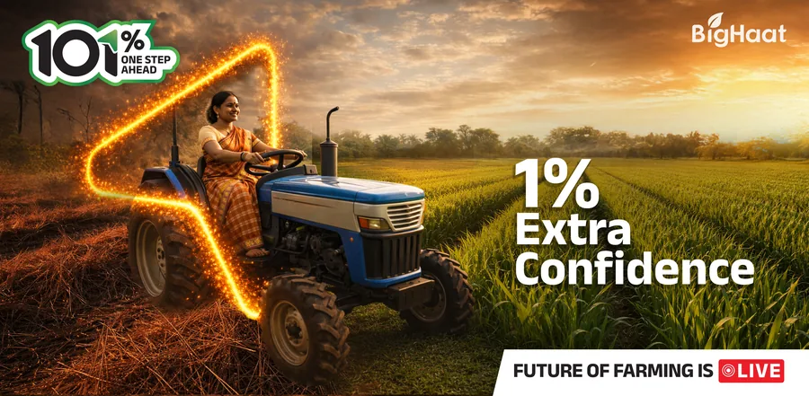

Dell Futurist · 2018#ItsAll
Happening
Here
Campaign copy for Dell's youth platform, where six passions, six mentors and a public vote decided who got the mentoring.
Enter the work.
Win the mentor.Youth platform · Platform · Film · Social · Voting
Dell Futurist was an annual youth platform, and the 2018 edition ran on six passions: art, music, film-making, photography, gaming and app development. Each had a mentor, Alicia Souza, Monica Dogra, Madhur Bhandarkar, Shivang Mehta, Ankit Panth and Amruth Charmana. Participants registered with their work, went through a public vote, and the winner in each category got a mentoring session.
I wrote scripts and copy for the campaign: films introducing the platform and its mentors, posts for the registration push, and copy that carried the voting phase. The platform's ask was participation, not purchase, so the lines stayed close to the work people were already making, a portfolio, a track, a film, a game build.
Enter the work.
Win the mentor.
Six categories meant six different audiences, but one behaviour: young people already making things and looking for a way to show them. The campaign's job was to make the platform feel like a stage rather than a contest page, name the mentor, show the standard, and ask for the work. The vote made the audience part of the selection, not just the audience.
Agency work for Dell Futurist. Visuals from this campaign were not available in the source files.
101%, A Step Ahead
BigHaat · 2024–2026